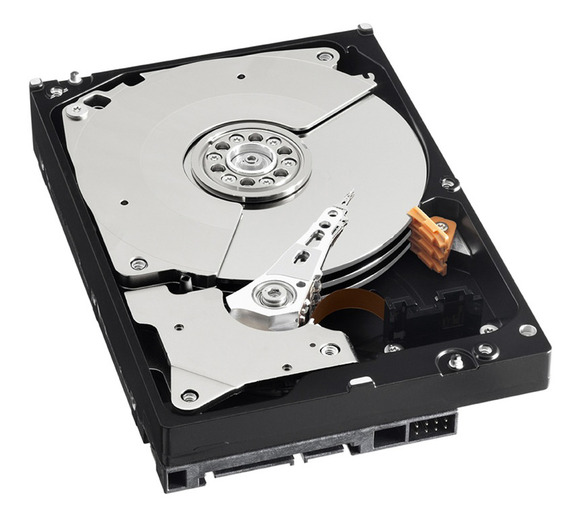

Hardware
Componentes de computadoras
Componentes Básicos de Hardware
- Gabinete y Fuente
- Placa Madre. Motherboard.
- Microprocesador. CPU.
- CPU Fan y Coolers.
- Discos Rígidos. Hard Disks
- BIOS y pila
- Chipset
- RAM
- Placa de Video. Procesador Gráfico
Gabinete. Case.

Otro gabinete
Fuente de alimentación. Power Supply.
Fuente de alimentación de cerca.

Muchas fuentes de alimentación.
Placa madre. Motherboard.

Factores de forma para placa madre.

Motherboard en gabinete.
Discos Rígidos. Hard Disks.
Disco magnético mecánico.Con conector IDE.
Discos Rígidos. Hard Disks.
Disco magnético mecánico. Con conector SATA.
Discos Rígidos. Hard Disks.
Disco magnético mecánico. Vista interior.
Discos Rígidos. Hard Disks.
Puesto en gabinete.IDE vs SATA
IDE vs SATA
Discos Rígidos. Hard Disks.
Discos de Estado Sólido (SSD). Sata y Sata M2.Microprocesador. CPU.
Microprocesador. CPU.

Disipador y Ventilador. CPU Fan. Cooler

Disipador y Ventilador CPU. CPU Fan. Cooler
Grasa siliconada. Pasta térmica.Disipador y Ventilador CPU. CPU Fan. Cooler
Instalado!BIOS y pila

Chipset: northbridge, southbridge
Memoria RAM
Memoria RAM
Placa de Video. Procesador Gráfico
Con salidas DVI y HDMIPlaca de Video. Procesador Gráfico
Con salidas VGA, HDMI y DVIConectores Externos
Conectores Externos
- USB
- Ethernet
- Sonido: line in, line out, mic
- PS/2
- Video: VGA, DVI, HDMI
- Serie DB9
- Paralelo DB25
Conectores Internos Motherboard
Conectores Internos Motherboard
- Conectores IDE y SATA
- Conector ATX 24 pines
- Conectores RAM
- Conector CPU fan
- CPU socket
- Jumpers
- Slots PCI, PCI express
- Conectores al panel
Conector IDE.
Conectores SATA en Motherboard.
Cables SATA. Datos y Alimentación.
Dispositivo SATA Conectado.
Conector ATX 24 pines. Alimentación Motherboard.
CPU Socket
CPU Socket
Conector CPU Fan
Jumpers